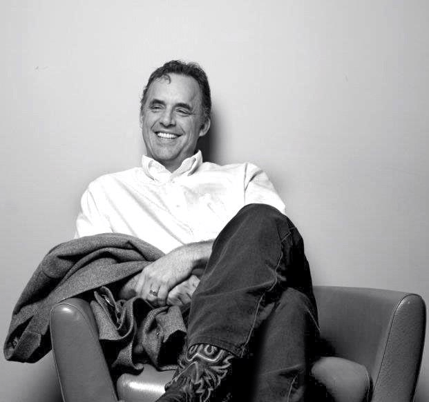

Dr. Jordan B. Peterson
Professor, defensor of freedom, liberator of minds

Jordan B. Peterson, a spotlight against false myth of progress
Some info on how and why Dr Jordan Peterson became famous
Born in 1962, the son of a teacher and a librarian, and brought up in a small town in Alberta, Canada.
He became interested in politics and philosophy in his early teens, thanks in part to his school librarian Sandy Notley,
whose husband was leader of the Alberta New Democratic Party.
He progressed to university, and after completing a BA in political science spent a year in Europe.
Here he became interested in – and disturbed by – 20th-century European totalitarianism, which prompted him to return to university to study psychology.
Stints studying and researching in Montreal and Boston followed, then in 1998 he returned to Canada to become a professor at the University of Toronto.
A year later Peterson published Maps of Meaning: The Architecture of Belief, which was turned into a 13-part series for Canadian TV.
However, it wasn’t until 2016 that he came to global attention, thanks to the release of his three-part lecture video series Professor Against Political Correctness.
In the first part, he expressed his opposition to the Canadian Government’s Bill C-16, which he described as a threat to free speech.
He claimed the proposed reforms would leave a person open to prosecution under provincial human rights laws in the hypothesis that the person refused to call a transgender student or colleague by their preferred pronoun.
He did also clarify in a tv program, thah he personally will call a transgender person by its preferred pronoun.
For the last point he was mistaken, beacause small minded people thought there was an angenda, when is point was ONLY about the freedom of speach.
Form more information see Jordan B. Peterson site .